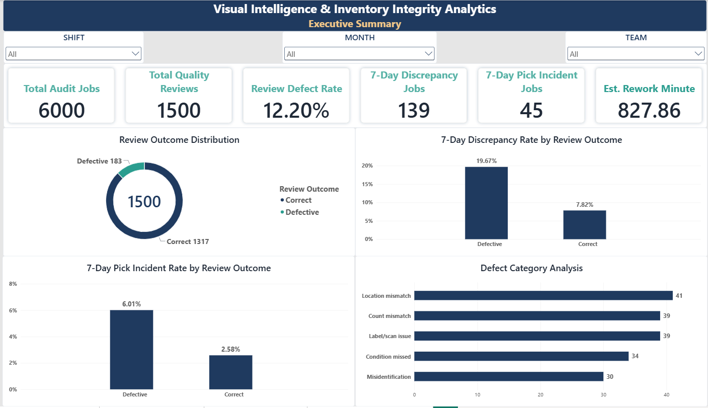
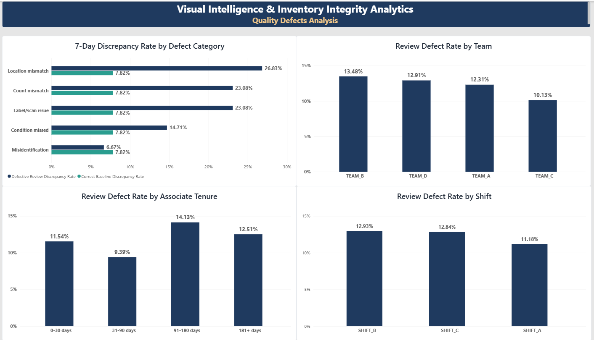
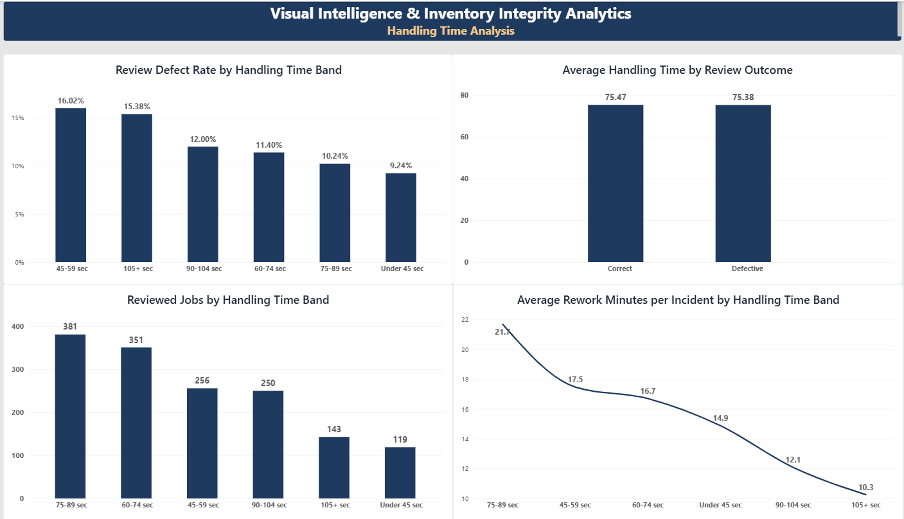
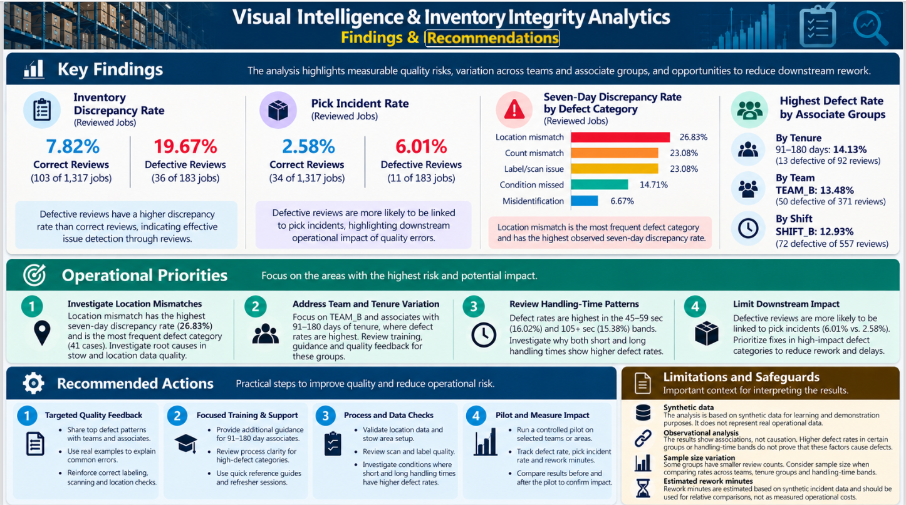

01. Executive Overview
Review coverage, quality KPIs and downstream outcomes.
BUSINESS ANALYSIS · OPERATIONS ANALYTICS
A synthetic-data portfolio project examining visual-audit quality outcomes and their association with subsequent inventory discrepancies and pick incidents.
Explore the four report pages developed for this analysis. Select any image to view it at a larger size.

Review coverage, quality KPIs and downstream outcomes.

Defect categories and differences across operational groups.

Handling-time bands, quality outcomes and illustrative rework estimates.

Key observations, recommended actions and analytical limitations.
All data are synthetic. The observed differences are associations, not evidence that a review defect caused a subsequent event. Results are illustrative and are not production performance estimates.
Supporting documents covering the business problem, requirements, KPI definitions, data model, findings and complete case study.
End-to-end project overview, methodology, validated results, recommendations and limitations.
View Case StudyBusiness context, objectives, scope and key business questions.
View Problem StatementRequirements, analysis questions, business rules and acceptance criteria.
View RequirementsKPI formulas, denominators, eligibility rules and validation controls.
View KPI DictionaryTable definitions, data grain, keys, relationships and analytical rules.
View Data ModelValidated results, analytical interpretation, recommendations and limitations.
View Findings ReportBrowse the README, dataset and all project files.
Explore GitHub RepositoryExplore the repository for the README, SQL analysis, synthetic dataset, KPI Dictionary, Data Dictionary & Data Model, findings report, and portfolio case study.
Explore Project Files